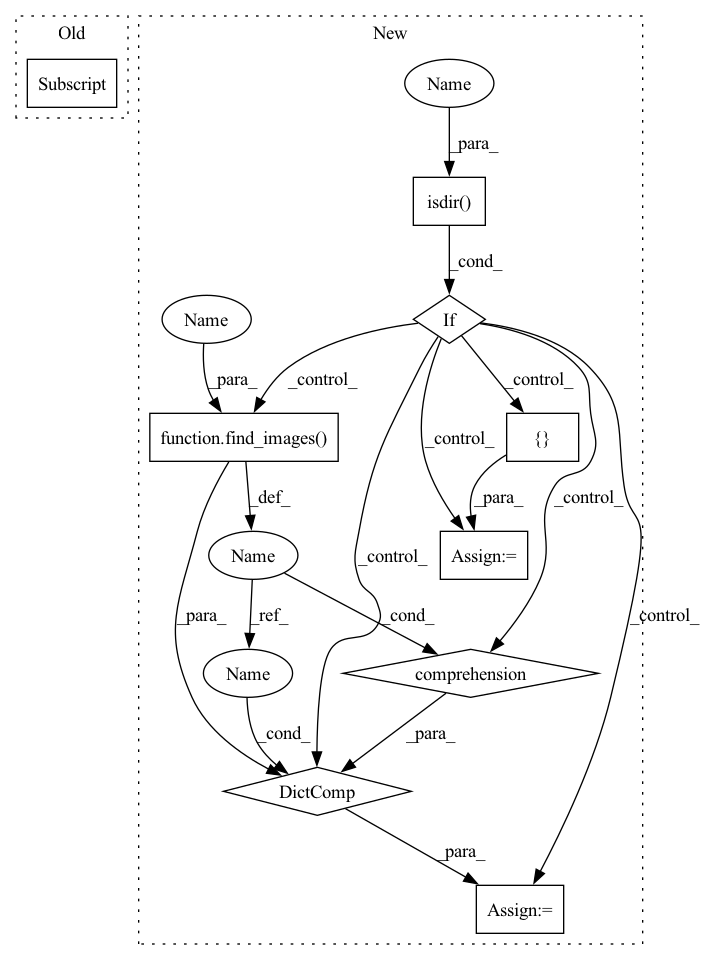

Pattern ID :16667

Before Change
image_path = osp.join(self.image_dir, item_id +
ImagenetTxtPath.DEFAULT_IMAGE_EXT)
for path in glob(osp.join(self.image_dir, item_id + "*")):
if osp.splitext(path)[1] in ImagenetTxtPath.IMAGE_EXT_FORMAT:
image_path = path
break
items[item_id] = DatasetItem(id=item_id, subset=self._subset,
After Change
items = {}
image_dir = self.image_dir
if osp.isdir(image_dir):
images = { osp.splitext(osp.relpath(p, image_dir))[0]: p
for p in find_images(image_dir, recursive=True) }
else:
images = {}
with open(path, encoding="utf-8") as f:
for line in f:
item = line.split("\"")
In pattern: SUPERPATTERN
Frequency: 3
Non-data size: 9
Instances
Fragment ID: 55886188
Project Name: openvinotoolkit/datumaro
Commit Name: 745c16ac8d1d924e7784b3c6b9f6fe1a11a13624
Time: 2021-03-18
Author: maxim.zhiltsov@intel.com
File Name: datumaro/plugins/imagenet_txt_format.py
M Class Name: ImagenetTxtExtractor
N Class Name: ImagenetTxtExtractor
M Method Name: _load_items(2)
N Method Name: _load_items(2)
M Parent Class: SourceExtractor
N Parent Class: SourceExtractor
M File Name: datumaro/plugins/imagenet_txt_format.py
N File Name: datumaro/plugins/imagenet_txt_format.py
M Start Line: 70
M End Line: 76
N Start Line: 52
N End Line: 59
'>
Before Change
if item_id not in items:
image_path = osp.join(self._dataset_dir, self._subset,
row["NAME_ID"] + VggFace2Path.IMAGE_EXT)
items[item_id] = DatasetItem(id=item_id, subset=self._subset,
image=image_path)
After Change
items = {}
image_dir = osp.join(self._dataset_dir, self._subset)
if osp.isdir(image_dir):
images = { osp.splitext(osp.relpath(p, image_dir))[0]: p
for p in find_images(image_dir, recursive=True) }
else:
images = {}
with open(path, encoding="utf-8") as content:
landmarks_table = list(csv.DictReader(content))
for row in landmarks_table:
'>
Fragment ID: 55886189
Project Name: openvinotoolkit/datumaro
Commit Name: 22728f23e850b31562cdb5da80cd34722a091574
Time: 2021-03-19
Author: maxim.zhiltsov@intel.com
File Name: datumaro/plugins/vgg_face2_format.py
M Class Name: VggFace2Extractor
N Class Name: VggFace2Extractor
M Method Name: _load_items(2)
N Method Name: _load_items(2)
M Parent Class: SourceExtractor
N Parent Class: SourceExtractor
M File Name: datumaro/plugins/vgg_face2_format.py
N File Name: datumaro/plugins/vgg_face2_format.py
M Start Line: 73
M End Line: 109
N Start Line: 73
N End Line: 80
'>
Before Change
item_id = line[0]
if item_id.endswith(LfwPath.IMAGE_EXT):
item_id = item_id[:-len(LfwPath.IMAGE_EXT)]
if item_id not in items:
items[item_id] = DatasetItem(id=item_id, subset=self._subset,
image=osp.join(images_dir, line[0]),
attributes={"positive_pairs": [], "negative_pairs": []})
After Change
def _load_items(self, path):
items = {}
images_dir = osp.join(self._dataset_dir, self._subset, LfwPath.IMAGES_DIR)
if osp.isdir(images_dir):
images = { osp.splitext(osp.relpath(p, images_dir))[0]: p
for p in find_images(images_dir, recursive=True) }
else:
images = {}
with open(path, encoding="utf-8") as f:
for line in f:
pair = line.strip().split("\t")
'>
Fragment ID: 55886190
Project Name: openvinotoolkit/datumaro
Commit Name: 053e9cdc72e099a2b006bc8dbe3e4a699c922c4a
Time: 2021-03-18
Author: maxim.zhiltsov@intel.com
File Name: datumaro/plugins/lfw_format.py
M Class Name: LfwExtractor
N Class Name: LfwExtractor
M Method Name: _load_items(2)
N Method Name: _load_items(2)
M Parent Class: SourceExtractor
N Parent Class: SourceExtractor
M File Name: datumaro/plugins/lfw_format.py
N File Name: datumaro/plugins/lfw_format.py
M Start Line: 30
M End Line: 84
N Start Line: 35
N End Line: 93